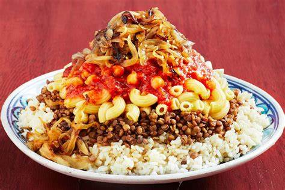
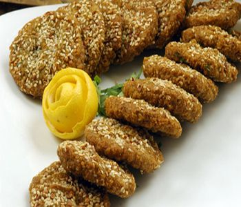

Food in Egypt
These are some of my favourites
Kushari
Carb overload coming right at you! Come lunch time in Cairo you ll see a stack of locals lined up at every kushari shop around, waiting for a hearty portion of one of Egypt s favourite street foods. This filling meal is made up of rice, macaroni and lentils, topped with tomato sauce, garlic vinegar and garnished with chickpeas and fried onions. It s a perfect meal that is substantial, nutrient-packed and cheap. Exactly what the Egyptians were after!
ful we tameya
Ta meya and ful mudammas, which are essentially fava beans and falafel are the original Egyptian fast-foods. They re a staple of the Egyptian diet, mainly because they re filling and use ingredients that are easily accessible in the country. The ful is made of fava beans that are cooked for hours in a pot called a qedra. The ta-meya, which is an Egyptian falafel, is made out of crushed fava beans that is later made into a paste, then fried. Nowadays you can find falafels all over the Middle East however, Egypt is the actual origin of those delightful fried treats. A perfect dish for all you vegos!
Shawarma
Marinated and spit-roasted, shawarma is a delicious Middle Eastern meat treat whose origins can be traced back to the Ottoman Empire era, while its name stems from the Arabic pronunciation of the Turkish word çevirme (lit. to turn; turning), and refers to the rotating skewer on which the meat is cooked.